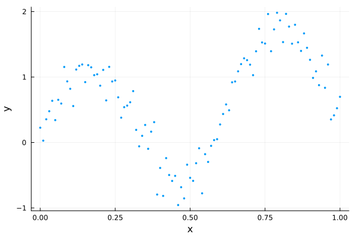

Initializing HMC with Pathfinder
The MCMC warm-up phase
When using MCMC to draw samples from some target distribution, there is often a lengthy warm-up phase with 2 phases:
- converge to the typical set (the region of the target distribution where the bulk of the probability mass is located)
- adapt any tunable parameters of the MCMC sampler (optional)
While (1) often happens fairly quickly, (2) usually requires a lengthy exploration of the typical set to iteratively adapt parameters suitable for further exploration. An example is the widely used windowed adaptation scheme of Hamiltonian Monte Carlo (HMC) in Stan [3], where a step size and positive definite metric (aka mass matrix) are adapted. For posteriors with complex geometry, the adaptation phase can require many evaluations of the gradient of the log density function of the target distribution.
Pathfinder can be used to initialize MCMC, and in particular HMC, in 3 ways:
- Initialize MCMC from one of Pathfinder's draws (replace phase 1 of the warm-up).
- Initialize an HMC metric adaptation from the inverse of the covariance of the multivariate normal approximation (replace the first window of phase 2 of the warm-up).
- Use the inverse of the covariance as the metric without further adaptation (replace phase 2 of the warm-up).
This tutorial demonstrates all three approaches with DynamicHMC.jl and AdvancedHMC.jl. Both of these packages have standalone implementations of adaptive HMC (aka NUTS) and can be used independently of any probabilistic programming language (PPL). Both the Turing and Soss PPLs have some DynamicHMC integration, while Turing also integrates with AdvancedHMC.
For demonstration purposes, we'll use the following dummy data:
using LinearAlgebra, Pathfinder, Random, StatsFuns, StatsPlots
Random.seed!(91)
x = 0:0.01:1
y = @. sin(10x) + randn() * 0.2 + x
scatter(x, y; xlabel="x", ylabel="y", legend=false, msw=0, ms=2)
We'll fit this using a simple polynomial regression model:
\[\begin{aligned} \sigma &\sim \text{Half-Normal}(\mu=0, \sigma=1)\\ \alpha, \beta_j &\sim \mathrm{Normal}(\mu=0, \sigma=1)\\ \hat{y}_i &= \alpha + \sum_{j=1}^J x_i^j \beta_j\\ y_i &\sim \mathrm{Normal}(\mu=\hat{y}_i, \sigma=\sigma) \end{aligned}\]
We just need to implement the log-density function of the resulting posterior.
struct RegressionProblem{X,Z,Y}
x::X
J::Int
z::Z
y::Y
end
function RegressionProblem(x, J, y)
z = x .* (1:J)'
return RegressionProblem(x, J, z, y)
end
function (prob::RegressionProblem)(θ)
(; σ, α, β) = θ
(; z, y) = prob
lp = normlogpdf(σ) + logtwo
lp += normlogpdf(α)
lp += sum(normlogpdf, β)
y_hat = muladd(z, β, α)
lp += sum(eachindex(y_hat, y)) do i
return normlogpdf(y_hat[i], σ, y[i])
end
return lp
end
J = 3
dim = J + 2
model = RegressionProblem(x, J, y)
ndraws = 1_000;DynamicHMC.jl
To use DynamicHMC, we first need to transform our model to an unconstrained space using TransformVariables.jl and wrap it in a type that implements the LogDensityProblems interface (see DynamicHMC's worked example):
using DynamicHMC, ForwardDiff, LogDensityProblems, LogDensityProblemsAD, TransformVariables
using TransformedLogDensities: TransformedLogDensity
transform = as((σ=asℝ₊, α=asℝ, β=as(Array, J)))
P = TransformedLogDensity(transform, model)
∇P = ADgradient(:ForwardDiff, P)ForwardDiff AD wrapper for TransformedLogDensity of dimension 5, w/ chunk size 5Pathfinder can take any object that implements this interface.
result_pf = pathfinder(∇P)Single-path Pathfinder result
tries: 1
draws: 5
fit iteration: 19 (total: 27)
fit ELBO: -116.37 ± 0.29
fit distribution: MvNormal{Float64, Pathfinder.WoodburyPDMat{Float64, LinearAlgebra.Diagonal{Float64, Vector{Float64}}, Matrix{Float64}, Matrix{Float64}, Pathfinder.WoodburyPDFactorization{Float64, LinearAlgebra.Diagonal{Float64, Vector{Float64}}, LinearAlgebra.QRCompactWYQ{Float64, Matrix{Float64}, Matrix{Float64}}, LinearAlgebra.UpperTriangular{Float64, Matrix{Float64}}}}, Vector{Float64}}(
dim: 5
μ: [-0.3519374274430237, 0.2469006000838245, 0.058275882597590235, 0.11655176210247765, 0.17482764793925842]
Σ: [0.009946200741163912 -0.010857736662224778 … 0.0945761989658503 -0.05406126770592312; -0.010857736662224775 0.04217029814718195 … -0.21130899138871223 0.11256047339424753; … ; 0.0945761989658503 -0.21130899138871223 … 2.477040093076655 -1.4323279373309448; -0.05406126770592312 0.11256047339424753 … -1.4323279373309448 0.8357026950008384]
)
init_params = result_pf.draws[:, 1]5-element Vector{Float64}:
-0.21865504404778452
0.3277454516221148
0.08946897594723337
0.2043408586549395
0.1375294986077017inv_metric = result_pf.fit_distribution.Σ5×5 Pathfinder.WoodburyPDMat{Float64, LinearAlgebra.Diagonal{Float64, Vector{Float64}}, Matrix{Float64}, Matrix{Float64}, Pathfinder.WoodburyPDFactorization{Float64, LinearAlgebra.Diagonal{Float64, Vector{Float64}}, LinearAlgebra.QRCompactWYQ{Float64, Matrix{Float64}, Matrix{Float64}}, LinearAlgebra.UpperTriangular{Float64, Matrix{Float64}}}}:
0.0099462 -0.0108577 -0.0160873 0.0945762 -0.0540613
-0.0108577 0.0421703 0.0336147 -0.211309 0.11256
-0.0160873 0.0336147 0.097474 -0.439433 0.249701
0.0945762 -0.211309 -0.439433 2.47704 -1.43233
-0.0540613 0.11256 0.249701 -1.43233 0.835703Initializing from Pathfinder's draws
Here we just need to pass one of the draws as the initial point q:
result_dhmc1 = mcmc_with_warmup(
Random.default_rng(),
∇P,
ndraws;
initialization=(; q=init_params),
reporter=NoProgressReport(),
)(posterior_matrix = [-0.3647903035090246 -0.3353102460124085 … -0.36995481150837195 -0.3111520494753749; 0.11870378344346054 0.11185461868194863 … 0.5025139146540669 0.5271243965461933; … ; -0.44833967468641456 0.7498222411966915 … 0.2055350037974886 -0.3299704847866773; 0.17315561830999632 -0.7272745556160446 … 0.049405149734262646 0.059908698168726626], tree_statistics = DynamicHMC.TreeStatisticsNUTS[DynamicHMC.TreeStatisticsNUTS(-116.48653232001101, 6, turning at positions -45:18, 0.9973166150658701, 63, DynamicHMC.Directions(0xef9c2212)), DynamicHMC.TreeStatisticsNUTS(-116.04327847183332, 6, turning at positions -7:-70, 0.985440819506696, 127, DynamicHMC.Directions(0x56dc45b9)), DynamicHMC.TreeStatisticsNUTS(-121.79665059524993, 6, turning at positions -9:54, 0.8620218954111495, 63, DynamicHMC.Directions(0x22431fb6)), DynamicHMC.TreeStatisticsNUTS(-122.27655163420928, 6, turning at positions -32:31, 0.9448482148298388, 63, DynamicHMC.Directions(0x1bc272df)), DynamicHMC.TreeStatisticsNUTS(-123.5465781270646, 6, turning at positions 51:82, 0.9436362744368901, 95, DynamicHMC.Directions(0x6b6b8372)), DynamicHMC.TreeStatisticsNUTS(-118.40366982414312, 5, turning at positions 53:56, 0.9994182951382967, 59, DynamicHMC.Directions(0x0d9c257c)), DynamicHMC.TreeStatisticsNUTS(-116.15532925682426, 6, turning at positions -10:53, 0.957896246711234, 63, DynamicHMC.Directions(0x417e57f5)), DynamicHMC.TreeStatisticsNUTS(-116.28474651925818, 6, turning at positions -53:-116, 0.9232877181839163, 127, DynamicHMC.Directions(0xa0ed1a0b)), DynamicHMC.TreeStatisticsNUTS(-117.35704611819344, 6, turning at positions -45:18, 0.9988281183708764, 63, DynamicHMC.Directions(0xa47def12)), DynamicHMC.TreeStatisticsNUTS(-114.79257681913276, 6, turning at positions 13:76, 0.9999911144193813, 127, DynamicHMC.Directions(0x9996f8cc)) … DynamicHMC.TreeStatisticsNUTS(-114.96776406438646, 2, turning at positions -1:2, 0.9999999999999999, 3, DynamicHMC.Directions(0x0f7ca876)), DynamicHMC.TreeStatisticsNUTS(-121.96335523385578, 5, turning at positions -30:-61, 0.9304390297067443, 63, DynamicHMC.Directions(0x93f21042)), DynamicHMC.TreeStatisticsNUTS(-122.1983941835659, 6, turning at positions -6:57, 0.999416712826658, 63, DynamicHMC.Directions(0xa50bb179)), DynamicHMC.TreeStatisticsNUTS(-116.47073808471096, 6, turning at positions -22:41, 0.9999375847443216, 63, DynamicHMC.Directions(0x454c3569)), DynamicHMC.TreeStatisticsNUTS(-115.16799868685153, 6, turning at positions -16:47, 0.9985521390399448, 63, DynamicHMC.Directions(0xbab8eb6f)), DynamicHMC.TreeStatisticsNUTS(-114.75797716955184, 7, turning at positions -13:114, 0.9829528111662348, 127, DynamicHMC.Directions(0x24ab06f2)), DynamicHMC.TreeStatisticsNUTS(-114.78646879579335, 6, turning at positions -22:41, 0.9153598111972738, 63, DynamicHMC.Directions(0x26b7bea9)), DynamicHMC.TreeStatisticsNUTS(-118.98703234173242, 5, turning at positions 20:51, 0.989626754906612, 63, DynamicHMC.Directions(0x9e7c3433)), DynamicHMC.TreeStatisticsNUTS(-117.20356048591232, 7, turning at positions -55:72, 0.9855875397588113, 127, DynamicHMC.Directions(0x101a8048)), DynamicHMC.TreeStatisticsNUTS(-117.55068298750005, 6, turning at positions -42:21, 0.8767126375593972, 63, DynamicHMC.Directions(0xaf98dc15))], logdensities = [-113.56293362724824, -114.52387892439073, -118.93487601229717, -119.2262379080327, -116.83327954391848, -113.93099245327527, -114.30669091703291, -114.25516843037353, -113.752534993515, -113.08914996448793 … -113.09489634611357, -120.41365690121798, -115.3725895548492, -113.86635513115351, -113.63652698331535, -113.50809820087918, -113.76042808563238, -114.1189941692915, -114.08348405636637, -115.53473472286136], κ = Gaussian kinetic energy (Diagonal), √diag(M⁻¹): [0.0669385048788978, 0.13106455272069006, 0.950379556917726, 0.8460116672125263, 0.6123309750636724], ϵ = 0.046591601905803325)Initializing metric adaptation from Pathfinder's estimate
To start with Pathfinder's inverse metric estimate, we just need to initialize a DynamicHMC.GaussianKineticEnergy object with it as input:
result_dhmc2 = mcmc_with_warmup(
Random.default_rng(),
∇P,
ndraws;
initialization=(; q=init_params, κ=GaussianKineticEnergy(inv_metric)),
warmup_stages=default_warmup_stages(; M=Symmetric),
reporter=NoProgressReport(),
)(posterior_matrix = [-0.4285708742144519 -0.26402606037990634 … -0.28775061538697316 -0.24937849177519383; 0.36678544634789007 0.04465422768174261 … 0.2792100594581871 0.21454377647950246; … ; -0.68833779065322 0.6566128053237169 … -0.3006061688236429 0.6591147985496935; 0.7764214689945816 0.0802048603075537 … 1.067482668001266 0.4239851062104337], tree_statistics = DynamicHMC.TreeStatisticsNUTS[DynamicHMC.TreeStatisticsNUTS(-115.48089768813784, 4, turning at positions -7:8, 0.9974239757256901, 15, DynamicHMC.Directions(0x99d24c18)), DynamicHMC.TreeStatisticsNUTS(-117.00161329666221, 4, turning at positions -5:10, 0.9532021711459042, 15, DynamicHMC.Directions(0x7f3b546a)), DynamicHMC.TreeStatisticsNUTS(-115.32027270369382, 3, turning at positions -7:-14, 0.9888286298224753, 15, DynamicHMC.Directions(0xfc9d32e1)), DynamicHMC.TreeStatisticsNUTS(-114.40286993039548, 3, turning at positions 7:14, 0.999973859856833, 15, DynamicHMC.Directions(0x830e1aee)), DynamicHMC.TreeStatisticsNUTS(-115.02096687883233, 4, turning at positions -2:13, 0.9696656364734114, 15, DynamicHMC.Directions(0x3bbc815d)), DynamicHMC.TreeStatisticsNUTS(-113.70307366021312, 3, turning at positions -7:0, 0.9909849299446502, 7, DynamicHMC.Directions(0xb1989000)), DynamicHMC.TreeStatisticsNUTS(-114.94644238938402, 3, turning at positions -4:3, 0.9235176017327097, 7, DynamicHMC.Directions(0x667ade53)), DynamicHMC.TreeStatisticsNUTS(-116.1645089859558, 4, turning at positions -10:5, 0.9817516463370402, 15, DynamicHMC.Directions(0x7908e2f5)), DynamicHMC.TreeStatisticsNUTS(-114.68052437713214, 4, turning at positions -10:5, 0.9777284993269334, 15, DynamicHMC.Directions(0xc7e70665)), DynamicHMC.TreeStatisticsNUTS(-114.22777517270217, 3, turning at positions 6:13, 0.9950217672521489, 15, DynamicHMC.Directions(0x4770deed)) … DynamicHMC.TreeStatisticsNUTS(-114.58748477447187, 3, turning at positions -5:2, 0.9950069422130755, 7, DynamicHMC.Directions(0x385c62ba)), DynamicHMC.TreeStatisticsNUTS(-116.72273681009607, 3, turning at positions -5:2, 0.9544686920697367, 7, DynamicHMC.Directions(0x4af633aa)), DynamicHMC.TreeStatisticsNUTS(-121.9725281121769, 3, turning at positions 0:7, 0.874498171325029, 7, DynamicHMC.Directions(0x700909bf)), DynamicHMC.TreeStatisticsNUTS(-117.62012238963115, 3, turning at positions -1:6, 0.9978791354265264, 7, DynamicHMC.Directions(0xf71e664e)), DynamicHMC.TreeStatisticsNUTS(-118.3307853349471, 3, turning at positions -5:2, 0.9045442173232935, 7, DynamicHMC.Directions(0x7d50dbda)), DynamicHMC.TreeStatisticsNUTS(-117.76424676935653, 3, turning at positions -2:5, 0.9943787070997371, 7, DynamicHMC.Directions(0x1279b0cd)), DynamicHMC.TreeStatisticsNUTS(-118.31127778252115, 4, turning at positions -13:2, 0.9967439000780164, 15, DynamicHMC.Directions(0x30c301a2)), DynamicHMC.TreeStatisticsNUTS(-117.22247003020314, 4, turning at positions -9:6, 0.833764224884391, 15, DynamicHMC.Directions(0xeb3cc926)), DynamicHMC.TreeStatisticsNUTS(-117.717684462214, 4, turning at positions -2:13, 0.9845546274150513, 15, DynamicHMC.Directions(0x12c00fad)), DynamicHMC.TreeStatisticsNUTS(-117.06217179050415, 3, turning at positions -5:2, 0.9980889502391387, 7, DynamicHMC.Directions(0xccc4797a))], logdensities = [-113.77358517902455, -114.04328176249264, -113.83939791265898, -112.863613864865, -112.86318301857725, -113.2064371359473, -114.41349173539871, -113.77956719999999, -113.38444614118742, -113.23712913420722 … -113.09440281655351, -113.87442536138876, -115.61582925073701, -114.31260578784564, -116.21566029648284, -115.37704726889777, -114.26766093210028, -114.59407862436353, -115.24595343812727, -115.9207500444333], κ = Gaussian kinetic energy (Symmetric), √diag(M⁻¹): [0.07591154414107078, 0.1389471142096943, 0.9527969236821805, 0.8485120128670054, 0.6041639531673343], ϵ = 0.3844319388963265)We also specified that DynamicHMC should tune a dense Symmetric matrix. However, we could also have requested a Diagonal metric.
Use Pathfinder's metric estimate for sampling
To turn off metric adaptation entirely and use Pathfinder's estimate, we just set the number and size of the metric adaptation windows to 0.
result_dhmc3 = mcmc_with_warmup(
Random.default_rng(),
∇P,
ndraws;
initialization=(; q=init_params, κ=GaussianKineticEnergy(inv_metric)),
warmup_stages=default_warmup_stages(; middle_steps=0, doubling_stages=0),
reporter=NoProgressReport(),
)(posterior_matrix = [-0.27316092890325394 -0.28476812821196945 … -0.3902666699273662 -0.33195899483799945; 0.25659121902898807 0.043243374637065804 … 0.33684065294550924 0.3961298812483039; … ; 1.2930753466798617 0.0812548153471041 … 0.5471008124613452 0.011896820583772227; -0.5904266819364028 0.24798464630073497 … -0.6730878683857038 -0.3582093755593466], tree_statistics = DynamicHMC.TreeStatisticsNUTS[DynamicHMC.TreeStatisticsNUTS(-115.73527836680053, 3, turning at positions -6:1, 0.9974135094298427, 7, DynamicHMC.Directions(0xe4969329)), DynamicHMC.TreeStatisticsNUTS(-114.73455042308196, 4, turning at positions -11:4, 0.98983311373342, 15, DynamicHMC.Directions(0x0cf0c984)), DynamicHMC.TreeStatisticsNUTS(-115.16170346697541, 4, turning at positions 10:25, 0.9773063121911969, 31, DynamicHMC.Directions(0x9a595db9)), DynamicHMC.TreeStatisticsNUTS(-115.63238601719644, 4, turning at positions -3:-18, 0.9917739608090909, 31, DynamicHMC.Directions(0x154ef06d)), DynamicHMC.TreeStatisticsNUTS(-117.00488251890992, 4, turning at positions 17:20, 0.9559435815216477, 23, DynamicHMC.Directions(0xf856bddc)), DynamicHMC.TreeStatisticsNUTS(-115.29136818907655, 3, turning at positions -7:0, 0.9751817002012778, 7, DynamicHMC.Directions(0xb0bae118)), DynamicHMC.TreeStatisticsNUTS(-115.57307801048896, 2, turning at positions 3:6, 0.9866546572817815, 7, DynamicHMC.Directions(0xe9e250f6)), DynamicHMC.TreeStatisticsNUTS(-117.32802973670249, 5, turning at positions -35:-42, 0.9457944783615345, 47, DynamicHMC.Directions(0x38500d05)), DynamicHMC.TreeStatisticsNUTS(-121.13236862918782, 4, turning at positions -11:4, 0.8960676150611512, 15, DynamicHMC.Directions(0xb6981574)), DynamicHMC.TreeStatisticsNUTS(-120.79796558609881, 3, turning at positions 0:7, 0.9957430219210411, 7, DynamicHMC.Directions(0x60cf83af)) … DynamicHMC.TreeStatisticsNUTS(-114.1059193278127, 5, turning at positions -2:-17, 0.9990824633015863, 47, DynamicHMC.Directions(0x9858bb9e)), DynamicHMC.TreeStatisticsNUTS(-119.1724133774396, 4, turning at positions 6:21, 0.8684481933382472, 31, DynamicHMC.Directions(0x02fb40f5)), DynamicHMC.TreeStatisticsNUTS(-114.12071956224283, 4, turning at positions -20:-27, 0.9979157305531858, 31, DynamicHMC.Directions(0x6fb7e364)), DynamicHMC.TreeStatisticsNUTS(-116.89949687389111, 3, turning at positions -1:6, 0.9420659260395657, 7, DynamicHMC.Directions(0xee2ad19e)), DynamicHMC.TreeStatisticsNUTS(-116.27781896889209, 5, turning at positions 23:38, 0.9982874362301205, 47, DynamicHMC.Directions(0x97c4a176)), DynamicHMC.TreeStatisticsNUTS(-115.47676104582897, 2, turning at positions 0:3, 0.9653635218140048, 3, DynamicHMC.Directions(0x8bf1a3e7)), DynamicHMC.TreeStatisticsNUTS(-117.10278466585258, 4, turning at positions -9:-16, 0.9255505800239916, 23, DynamicHMC.Directions(0xc098afa7)), DynamicHMC.TreeStatisticsNUTS(-116.15810485913924, 3, turning at positions -4:-11, 1.0, 15, DynamicHMC.Directions(0x95163644)), DynamicHMC.TreeStatisticsNUTS(-117.28316988116644, 4, turning at positions -14:-21, 0.8767588775033296, 23, DynamicHMC.Directions(0x6bcf7842)), DynamicHMC.TreeStatisticsNUTS(-115.22653856832774, 4, turning at positions -7:8, 0.9814937212738202, 15, DynamicHMC.Directions(0xa7e2f5f8))], logdensities = [-113.66240528808672, -113.4905000818368, -113.9854162879746, -113.61262149676062, -114.05392531366316, -114.50832455335676, -113.43398059779328, -113.53614350153717, -119.15187058652522, -114.19179635165577 … -112.93036192542459, -113.0762534805434, -113.38423238761347, -114.41976194483054, -114.96878453981347, -113.44516964581364, -115.5886574592506, -114.73836856979858, -114.13953322802529, -114.09379439840357], κ = Gaussian kinetic energy (WoodburyPDMat), √diag(M⁻¹): [0.09973064093428816, 0.20535407993799867, 0.3122083359083897, 1.5738615228401307, 0.9141677608627633], ϵ = 0.3922227930274382)AdvancedHMC.jl
Similar to Pathfinder and DynamicHMC, AdvancedHMC can also work with a LogDensityProblem:
using AdvancedHMC
nadapts = 500;Initializing from Pathfinder's draws
metric = DiagEuclideanMetric(dim)
hamiltonian = Hamiltonian(metric, ∇P)
ϵ = find_good_stepsize(hamiltonian, init_params)
integrator = Leapfrog(ϵ)
kernel = HMCKernel(Trajectory{MultinomialTS}(integrator, GeneralisedNoUTurn()))
adaptor = StepSizeAdaptor(0.8, integrator)
samples_ahmc1, stats_ahmc1 = sample(
hamiltonian,
kernel,
init_params,
ndraws + nadapts,
adaptor,
nadapts;
drop_warmup=true,
progress=false,
)([[-0.40572213343103736, 0.23151295727456328, -0.3932885072307346, -0.8137239982859121, 0.9458714377737422], [-0.2828770520014962, 0.5601067217088456, -1.2424950956133964, 0.16027481650998296, 0.42505414316753576], [-0.365860523027132, 0.28781680437160395, -1.3379968598420995, 0.13057188323270774, 0.5765306916038319], [-0.3693947378616833, 0.31023764793908515, -0.9703298050566568, 0.42235978319780776, 0.30968319359232527], [-0.39390247470385464, 0.10345321405687666, -0.9305766393892179, 0.43643964028178556, 0.350376209620456], [-0.37411976645756956, 0.3820376948522874, -0.9398861864932454, 0.4010430815248027, 0.28622883389327536], [-0.33084688739544377, 0.2444268565366379, 0.0685780256980777, -1.2148774132838933, 1.0903045037389456], [-0.3992678852677102, 0.2637721379488206, 0.37713641796877306, 0.5439490582902888, -0.18749088574375453], [-0.3951064650916889, 0.3241970778492913, -0.35518931364613915, 0.7825756583942249, -0.21274367428657226], [-0.38058705427557243, 0.22673217682684718, 0.21415385049045124, -0.56500008518245, 0.5893244114048943] … [-0.25171913693829834, 0.12333243318831574, -0.497353214139978, 0.7224036726912839, 0.02297262725741904], [-0.41706790934579097, 0.3023768138787933, 0.29074924421547055, 0.35019175488730564, -0.08866622036445417], [-0.48729575159727784, 0.23952613340094445, 0.36686999737656434, 0.3615895714745392, -0.0525385363312508], [-0.3710761104652319, 0.19160608202292911, 0.3792185692384251, 0.3223483853426458, -0.0746516653584205], [-0.3486569648194406, 0.21389346450935473, 0.2927297400592428, 0.1619673713787391, 0.018585118721613093], [-0.3486255629095706, 0.17906186356869563, -0.16113754624083063, 1.6658021414275228, -0.7295619168645354], [-0.33765332074515986, 0.22785503985433422, -0.5131675743658034, 0.5563386604582881, 0.13162103407065692], [-0.36263433467414924, 0.18945790708367957, -0.8437101792450176, -0.8229048223865498, 1.10620666611282], [-0.31131810212887207, 0.062385261049791654, -0.8903438021302528, -0.7412601246487441, 1.1673884300028676], [-0.3342658390816986, 0.1300641944371954, -0.9143604712588131, -0.7974522166687134, 1.1637697230084045]], NamedTuple[(n_steps = 15, is_accept = true, acceptance_rate = 0.9651442668121679, log_density = -113.22995359999283, hamiltonian_energy = 114.51111575395652, hamiltonian_energy_error = 0.017005670691048635, max_hamiltonian_energy_error = 0.08374508671367664, tree_depth = 3, numerical_error = false, step_size = 0.038873021732120885, nom_step_size = 0.038873021732120885, is_adapt = false), (n_steps = 127, is_accept = true, acceptance_rate = 0.7587494979913042, log_density = -115.67770397496332, hamiltonian_energy = 118.207307398945, hamiltonian_energy_error = 0.1478017318893734, max_hamiltonian_energy_error = 0.5523633938922643, tree_depth = 6, numerical_error = false, step_size = 0.038873021732120885, nom_step_size = 0.038873021732120885, is_adapt = false), (n_steps = 15, is_accept = true, acceptance_rate = 0.8972428092649296, log_density = -113.55650406825485, hamiltonian_energy = 117.28348701912942, hamiltonian_energy_error = 0.0439287598249507, max_hamiltonian_energy_error = 0.24810828686993602, tree_depth = 3, numerical_error = false, step_size = 0.038873021732120885, nom_step_size = 0.038873021732120885, is_adapt = false), (n_steps = 63, is_accept = true, acceptance_rate = 0.9999079092116882, log_density = -113.03336506170925, hamiltonian_energy = 113.75879728845925, hamiltonian_energy_error = -0.03374814899358114, max_hamiltonian_energy_error = -0.15127631980953993, tree_depth = 6, numerical_error = false, step_size = 0.038873021732120885, nom_step_size = 0.038873021732120885, is_adapt = false), (n_steps = 11, is_accept = true, acceptance_rate = 0.6695366795486369, log_density = -113.44968506563401, hamiltonian_energy = 117.78949040750133, hamiltonian_energy_error = -0.08481690155277022, max_hamiltonian_energy_error = 0.821870149079075, tree_depth = 3, numerical_error = false, step_size = 0.038873021732120885, nom_step_size = 0.038873021732120885, is_adapt = false), (n_steps = 11, is_accept = true, acceptance_rate = 0.9000669311797281, log_density = -113.57433822575801, hamiltonian_energy = 116.50287309027725, hamiltonian_energy_error = 0.17528355471576162, max_hamiltonian_energy_error = 0.1949514023022374, tree_depth = 3, numerical_error = false, step_size = 0.038873021732120885, nom_step_size = 0.038873021732120885, is_adapt = false), (n_steps = 63, is_accept = true, acceptance_rate = 0.9945923909102509, log_density = -113.68627770585904, hamiltonian_energy = 114.90958666721936, hamiltonian_energy_error = -0.09935825765600725, max_hamiltonian_energy_error = -0.22158134853377476, tree_depth = 6, numerical_error = false, step_size = 0.038873021732120885, nom_step_size = 0.038873021732120885, is_adapt = false), (n_steps = 79, is_accept = true, acceptance_rate = 0.9661823562410531, log_density = -112.98872196735945, hamiltonian_energy = 115.11891748369364, hamiltonian_energy_error = 0.08655075730469264, max_hamiltonian_energy_error = 0.14541066649506718, tree_depth = 6, numerical_error = false, step_size = 0.038873021732120885, nom_step_size = 0.038873021732120885, is_adapt = false), (n_steps = 111, is_accept = true, acceptance_rate = 0.9919056304183365, log_density = -113.43500985674368, hamiltonian_energy = 114.04812551013829, hamiltonian_energy_error = 0.052771040553793114, max_hamiltonian_energy_error = -0.21701179069978593, tree_depth = 6, numerical_error = false, step_size = 0.038873021732120885, nom_step_size = 0.038873021732120885, is_adapt = false), (n_steps = 127, is_accept = true, acceptance_rate = 1.0, log_density = -112.49720964643889, hamiltonian_energy = 114.24549876233218, hamiltonian_energy_error = -0.2691938449863045, max_hamiltonian_energy_error = -0.2691938449863045, tree_depth = 7, numerical_error = false, step_size = 0.038873021732120885, nom_step_size = 0.038873021732120885, is_adapt = false) … (n_steps = 47, is_accept = true, acceptance_rate = 0.9844037296550863, log_density = -113.70453484057033, hamiltonian_energy = 116.33551272526573, hamiltonian_energy_error = 0.01663880333651946, max_hamiltonian_energy_error = -0.06715353191995632, tree_depth = 5, numerical_error = false, step_size = 0.038873021732120885, nom_step_size = 0.038873021732120885, is_adapt = false), (n_steps = 79, is_accept = true, acceptance_rate = 0.9998634177718997, log_density = -112.69960606369311, hamiltonian_energy = 114.53246056779707, hamiltonian_energy_error = -0.03889062216097727, max_hamiltonian_energy_error = -0.06973556465997888, tree_depth = 6, numerical_error = false, step_size = 0.038873021732120885, nom_step_size = 0.038873021732120885, is_adapt = false), (n_steps = 7, is_accept = true, acceptance_rate = 0.2754061661289085, log_density = -114.70051870244235, hamiltonian_energy = 119.58157070073634, hamiltonian_energy_error = -0.18869419260163056, max_hamiltonian_energy_error = 4.708389705718531, tree_depth = 3, numerical_error = false, step_size = 0.038873021732120885, nom_step_size = 0.038873021732120885, is_adapt = false), (n_steps = 7, is_accept = true, acceptance_rate = 1.0, log_density = -112.63944163033209, hamiltonian_energy = 114.80886289131506, hamiltonian_energy_error = -0.22776381761975983, max_hamiltonian_energy_error = -0.28361585759269303, tree_depth = 3, numerical_error = false, step_size = 0.038873021732120885, nom_step_size = 0.038873021732120885, is_adapt = false), (n_steps = 27, is_accept = true, acceptance_rate = 0.4445004693475877, log_density = -113.40153209433578, hamiltonian_energy = 117.36348793731621, hamiltonian_energy_error = 0.25665472417814783, max_hamiltonian_energy_error = 2.241572149972086, tree_depth = 4, numerical_error = false, step_size = 0.038873021732120885, nom_step_size = 0.038873021732120885, is_adapt = false), (n_steps = 67, is_accept = true, acceptance_rate = 0.9725184891287372, log_density = -113.96648636117892, hamiltonian_energy = 115.78546293362642, hamiltonian_energy_error = -0.48875083958665755, max_hamiltonian_energy_error = -0.5418603882592805, tree_depth = 6, numerical_error = false, step_size = 0.038873021732120885, nom_step_size = 0.038873021732120885, is_adapt = false), (n_steps = 63, is_accept = true, acceptance_rate = 0.479768946739761, log_density = -113.1089780430388, hamiltonian_energy = 118.03031993701825, hamiltonian_energy_error = 0.2965337564521633, max_hamiltonian_energy_error = 2.0599026255376174, tree_depth = 6, numerical_error = false, step_size = 0.038873021732120885, nom_step_size = 0.038873021732120885, is_adapt = false), (n_steps = 63, is_accept = true, acceptance_rate = 0.9938974513682802, log_density = -113.63586006324262, hamiltonian_energy = 115.02059196215963, hamiltonian_energy_error = -0.22049151722464444, max_hamiltonian_energy_error = -0.33160519987711723, tree_depth = 6, numerical_error = false, step_size = 0.038873021732120885, nom_step_size = 0.038873021732120885, is_adapt = false), (n_steps = 7, is_accept = true, acceptance_rate = 0.922853171625574, log_density = -114.41582456380833, hamiltonian_energy = 114.98219561490717, hamiltonian_energy_error = -0.03759552589858117, max_hamiltonian_energy_error = 0.19225822670077264, tree_depth = 3, numerical_error = false, step_size = 0.038873021732120885, nom_step_size = 0.038873021732120885, is_adapt = false), (n_steps = 7, is_accept = true, acceptance_rate = 1.0, log_density = -113.83010025395492, hamiltonian_energy = 114.55484139391166, hamiltonian_energy_error = -0.018157237730775933, max_hamiltonian_energy_error = -0.024756760744864437, tree_depth = 3, numerical_error = false, step_size = 0.038873021732120885, nom_step_size = 0.038873021732120885, is_adapt = false)])Initializing metric adaptation from Pathfinder's estimate
We can't start with Pathfinder's inverse metric estimate directly. Instead we need to first extract its diagonal for a DiagonalEuclideanMetric or make it dense for a DenseEuclideanMetric:
metric = DenseEuclideanMetric(Matrix(inv_metric))
hamiltonian = Hamiltonian(metric, ∇P)
ϵ = find_good_stepsize(hamiltonian, init_params)
integrator = Leapfrog(ϵ)
kernel = HMCKernel(Trajectory{MultinomialTS}(integrator, GeneralisedNoUTurn()))
adaptor = StepSizeAdaptor(0.8, integrator)
samples_ahmc2, stats_ahmc2 = sample(
hamiltonian,
kernel,
init_params,
ndraws + nadapts,
adaptor,
nadapts;
drop_warmup=true,
progress=false,
)([[-0.39705499834061886, 0.17520147992704457, -0.11296630034424648, -0.6834340457768248, 0.823693568180436], [-0.3458886414514182, 0.0706900723925961, 0.31517347797295353, 0.2635118844857733, 0.056862589154841575], [-0.3941498899877417, 0.23542454708857963, 0.235745626434657, 2.310143450540534, -1.3270827564212235], [-0.36984648506027085, 0.23542787929683257, -0.20539742925274782, -0.29393624077029634, 0.5028854800438186], [-0.4038857352843456, 0.13338975798613426, -0.43867587927359813, 1.2455186393417998, -0.32933219742917247], [-0.41784633749495137, 0.1354553793059926, -0.3313284289508766, 0.9661736113768575, -0.1602413400269238], [-0.23859264445046488, 0.14187033211336936, -0.058447246705553596, 0.3125364235440079, 0.03922465579608597], [-0.3414983310503076, 0.10221111793561585, -0.06172350415028405, 0.7546226311606015, -0.13438032744321293], [-0.33453351294407674, 0.20748292456179346, 0.09194754825733586, 0.06907738868821034, 0.18539820839259913], [-0.40673862545019024, 0.1665279247910648, 0.10996331163782656, -0.07636165290742378, 0.35428265150955357] … [-0.27507608744954315, 0.01742566920926067, -0.3929152389875127, 0.551944534345036, 0.21251896513875784], [-0.39770373601762815, 0.24878402400852595, -0.5294181518070739, 0.8225319477007034, -0.20058960527945574], [-0.3056620008019485, 0.10956780849919084, -0.4395175559833872, 1.1964000843721196, -0.24850858851679167], [-0.35166204196715256, 0.23220339682052635, -0.03770627464628201, 0.3490574867882529, -0.003785406213544701], [-0.2766965094092715, 0.11520621488729554, -0.796014577666486, 0.2967600634178438, 0.41999875848768764], [-0.35716833800042613, 0.24617801662333735, -0.7041930999904371, 1.0115285933145493, -0.2001717574395209], [-0.4179895407659589, 0.2933875500304853, -0.5153682704238228, -0.004729466656091752, 0.4724770139048879], [-0.28193364692460493, 0.07490637297843973, -0.35270896120582707, 1.2118853170985302, -0.3635646546257494], [-0.38926440213392866, 0.4147175074715543, -0.13589363932781096, -0.8326404343678082, 0.8131171639234558], [-0.2753690832021253, 0.12361308383400238, -1.1813088725743515, -0.8340072405125669, 1.353941064000427]], NamedTuple[(n_steps = 31, is_accept = true, acceptance_rate = 0.976365581433595, log_density = -113.15049266934969, hamiltonian_energy = 114.71568160628374, hamiltonian_energy_error = -0.2114362623509578, max_hamiltonian_energy_error = -0.3890563588896896, tree_depth = 4, numerical_error = false, step_size = 0.5210473744281926, nom_step_size = 0.5210473744281926, is_adapt = false), (n_steps = 31, is_accept = true, acceptance_rate = 0.9953453109240451, log_density = -113.08124768747776, hamiltonian_energy = 114.12077133002391, hamiltonian_energy_error = 0.0059401289943536995, max_hamiltonian_energy_error = -0.14981974095422856, tree_depth = 4, numerical_error = false, step_size = 0.5210473744281926, nom_step_size = 0.5210473744281926, is_adapt = false), (n_steps = 7, is_accept = true, acceptance_rate = 0.8822535997119457, log_density = -115.8728487181933, hamiltonian_energy = 117.99879959326415, hamiltonian_energy_error = 0.26663189384815666, max_hamiltonian_energy_error = 0.2857442172693254, tree_depth = 3, numerical_error = false, step_size = 0.5210473744281926, nom_step_size = 0.5210473744281926, is_adapt = false), (n_steps = 23, is_accept = true, acceptance_rate = 0.9799457086476753, log_density = -112.76924751762608, hamiltonian_energy = 119.00777028305254, hamiltonian_energy_error = -0.410270532260796, max_hamiltonian_energy_error = -0.42627106389230107, tree_depth = 4, numerical_error = false, step_size = 0.5210473744281926, nom_step_size = 0.5210473744281926, is_adapt = false), (n_steps = 7, is_accept = true, acceptance_rate = 0.9134628992447164, log_density = -113.85502586542349, hamiltonian_energy = 114.46522078192183, hamiltonian_energy_error = 0.15707210387698467, max_hamiltonian_energy_error = 0.15707210387698467, tree_depth = 3, numerical_error = false, step_size = 0.5210473744281926, nom_step_size = 0.5210473744281926, is_adapt = false), (n_steps = 3, is_accept = true, acceptance_rate = 0.5205917284831799, log_density = -114.13965401074726, hamiltonian_energy = 116.5247022673004, hamiltonian_energy_error = -0.08006544300138785, max_hamiltonian_energy_error = 1.2912197288900273, tree_depth = 2, numerical_error = false, step_size = 0.5210473744281926, nom_step_size = 0.5210473744281926, is_adapt = false), (n_steps = 7, is_accept = true, acceptance_rate = 0.4535347925549781, log_density = -115.80327331698662, hamiltonian_energy = 117.933181110782, hamiltonian_energy_error = 0.7521617593748999, max_hamiltonian_energy_error = 1.5371148506905712, tree_depth = 3, numerical_error = false, step_size = 0.5210473744281926, nom_step_size = 0.5210473744281926, is_adapt = false), (n_steps = 7, is_accept = true, acceptance_rate = 1.0, log_density = -112.88538671454046, hamiltonian_energy = 115.81406485081878, hamiltonian_energy_error = -0.37289981441105624, max_hamiltonian_energy_error = -0.4111216802970148, tree_depth = 3, numerical_error = false, step_size = 0.5210473744281926, nom_step_size = 0.5210473744281926, is_adapt = false), (n_steps = 7, is_accept = true, acceptance_rate = 0.9886857974765402, log_density = -112.39885960849297, hamiltonian_energy = 113.06910600062282, hamiltonian_energy_error = -0.17911559130770627, max_hamiltonian_energy_error = -0.21042955892892223, tree_depth = 3, numerical_error = false, step_size = 0.5210473744281926, nom_step_size = 0.5210473744281926, is_adapt = false), (n_steps = 7, is_accept = true, acceptance_rate = 0.9751311136410933, log_density = -112.88196715562614, hamiltonian_energy = 113.57170303905656, hamiltonian_energy_error = 0.031137055838414085, max_hamiltonian_energy_error = 0.05669099963769497, tree_depth = 3, numerical_error = false, step_size = 0.5210473744281926, nom_step_size = 0.5210473744281926, is_adapt = false) … (n_steps = 7, is_accept = true, acceptance_rate = 0.7511547034533492, log_density = -115.08719821442058, hamiltonian_energy = 117.36596507725338, hamiltonian_energy_error = 0.2504728779644836, max_hamiltonian_energy_error = 0.5814623985131391, tree_depth = 3, numerical_error = false, step_size = 0.5210473744281926, nom_step_size = 0.5210473744281926, is_adapt = false), (n_steps = 7, is_accept = true, acceptance_rate = 0.9970065722903004, log_density = -116.13617642479272, hamiltonian_energy = 117.06801411799403, hamiltonian_energy_error = 0.02117664467311897, max_hamiltonian_energy_error = -0.2834876589721631, tree_depth = 3, numerical_error = false, step_size = 0.5210473744281926, nom_step_size = 0.5210473744281926, is_adapt = false), (n_steps = 7, is_accept = true, acceptance_rate = 0.9852039593383652, log_density = -114.61895762820517, hamiltonian_energy = 117.25092041589713, hamiltonian_energy_error = 0.008145833197588104, max_hamiltonian_energy_error = -0.25964092914369985, tree_depth = 3, numerical_error = false, step_size = 0.5210473744281926, nom_step_size = 0.5210473744281926, is_adapt = false), (n_steps = 7, is_accept = true, acceptance_rate = 0.9756401116009632, log_density = -113.3405027141579, hamiltonian_energy = 117.75895076192167, hamiltonian_energy_error = -0.11163897225783614, max_hamiltonian_energy_error = -0.2786100923949988, tree_depth = 3, numerical_error = false, step_size = 0.5210473744281926, nom_step_size = 0.5210473744281926, is_adapt = false), (n_steps = 23, is_accept = true, acceptance_rate = 0.5859319977941307, log_density = -113.47745829154016, hamiltonian_energy = 119.3874730923335, hamiltonian_energy_error = 0.10990814279898586, max_hamiltonian_energy_error = 1.6147976193212799, tree_depth = 4, numerical_error = false, step_size = 0.5210473744281926, nom_step_size = 0.5210473744281926, is_adapt = false), (n_steps = 7, is_accept = true, acceptance_rate = 0.9310673032117353, log_density = -113.1697765252975, hamiltonian_energy = 114.48960348502797, hamiltonian_energy_error = -0.010951352201018949, max_hamiltonian_energy_error = 0.2441361828605153, tree_depth = 3, numerical_error = false, step_size = 0.5210473744281926, nom_step_size = 0.5210473744281926, is_adapt = false), (n_steps = 7, is_accept = true, acceptance_rate = 0.9392251382649481, log_density = -113.64226980401232, hamiltonian_energy = 114.61294825353758, hamiltonian_energy_error = 0.0926412041338267, max_hamiltonian_energy_error = 0.1658325383568524, tree_depth = 3, numerical_error = false, step_size = 0.5210473744281926, nom_step_size = 0.5210473744281926, is_adapt = false), (n_steps = 31, is_accept = true, acceptance_rate = 0.5127532561768896, log_density = -114.30100693322414, hamiltonian_energy = 119.88111799779948, hamiltonian_energy_error = 0.8007373438654639, max_hamiltonian_energy_error = 2.1709644892345494, tree_depth = 4, numerical_error = false, step_size = 0.5210473744281926, nom_step_size = 0.5210473744281926, is_adapt = false), (n_steps = 7, is_accept = true, acceptance_rate = 0.940022030318448, log_density = -113.87974952042427, hamiltonian_energy = 115.6795927083661, hamiltonian_energy_error = -0.23370983863983952, max_hamiltonian_energy_error = -0.8634487413275025, tree_depth = 3, numerical_error = false, step_size = 0.5210473744281926, nom_step_size = 0.5210473744281926, is_adapt = false), (n_steps = 23, is_accept = true, acceptance_rate = 0.9944226573751864, log_density = -116.21901905978268, hamiltonian_energy = 118.59106297604231, hamiltonian_energy_error = -0.3483352095580017, max_hamiltonian_energy_error = -0.6767720684429008, tree_depth = 4, numerical_error = false, step_size = 0.5210473744281926, nom_step_size = 0.5210473744281926, is_adapt = false)])Use Pathfinder's metric estimate for sampling
To use Pathfinder's metric with no metric adaptation, we need to use Pathfinder's own Pathfinder.RankUpdateEuclideanMetric type, which just wraps our inverse metric estimate for use with AdvancedHMC:
nadapts = 75
metric = Pathfinder.RankUpdateEuclideanMetric(inv_metric)
hamiltonian = Hamiltonian(metric, ∇P)
ϵ = find_good_stepsize(hamiltonian, init_params)
integrator = Leapfrog(ϵ)
kernel = HMCKernel(Trajectory{MultinomialTS}(integrator, GeneralisedNoUTurn()))
adaptor = StepSizeAdaptor(0.8, integrator)
samples_ahmc3, stats_ahmc3 = sample(
hamiltonian,
kernel,
init_params,
ndraws + nadapts,
adaptor,
nadapts;
drop_warmup=true,
progress=false,
)([[-0.3339735888723522, 0.32726733233766037, -1.5676763353718004, 0.4455628599553358, 0.43089942160726025], [-0.3150933351978778, 0.273332384908544, 1.2911135754683007, 0.28069307134926624, -0.35012141386889756], [-0.268692101081164, 0.1473750298254594, 1.8979055749862646, -1.081037517930076, 0.3836129255267762], [-0.2129004713782449, 0.17428991631891827, 1.9984871284483758, -1.1429374537495405, 0.36151402333330823], [-0.3205235857086571, 0.40406194821129837, 1.8052457854759358, -0.20662764067010758, -0.2775628253579975], [-0.37566466990962877, -0.04211507276443671, 1.4110913514599228, 0.6685450461884161, -0.45858419484726476], [-0.5097571631606671, 0.280843988600875, 1.2840986551340607, 0.9881874755900328, -0.8659796094088527], [-0.40059127940733424, 0.2874093733381314, 1.5199610246614208, 1.7592880889042846, -1.4028987298100066], [-0.28566196176521474, 0.1396521167291499, 1.2536070557648835, -0.88585608091089, 0.46283678725926625], [-0.33674496182090813, 0.2787205813431621, 0.78297622458438, -0.08414469060472984, -0.04702281792821972] … [-0.1849168761394295, 0.5087715013833656, 0.9805152018220993, -0.3441567576431829, 0.10402518580536586], [-0.2311096424444658, 0.2593148092351357, 0.7938462321877229, -0.1309301597748187, 0.12546719359738318], [-0.3677654082021117, 0.12526339248387772, 0.8697957639645723, -0.2077615128654705, 0.1676776223625669], [-0.25318445804015466, 0.373551597203064, 0.847544427643864, -0.38720776059054074, 0.09754274431023463], [-0.45885961592229196, 0.20704797190533505, 0.8470025925628691, 0.5261927080315427, -0.31323331954939243], [-0.19656059642057602, 0.3385728177240208, 1.2127009449471435, -0.8372603317346395, 0.3113772729393185], [-0.2955711882711959, 0.2491913288093749, 1.4193058472780176, -0.8092667300737938, 0.33903015923211344], [-0.35064636792804127, 0.35640343208531794, -0.322810458617329, 0.6371861549437723, -0.16522308798110857], [-0.3238538111213517, 0.10234294491501186, 0.6727007201828237, -0.1542980500136297, 0.29072800049459596], [-0.3448790637024737, 0.2225979639299117, 0.6783107542319644, -0.08334521552396912, 0.13617817295425]], NamedTuple[(n_steps = 7, is_accept = true, acceptance_rate = 0.9073920703949813, log_density = -113.88532122132436, hamiltonian_energy = 118.09679741717044, hamiltonian_energy_error = -0.01096823279803516, max_hamiltonian_energy_error = 0.18465524658977017, tree_depth = 3, numerical_error = false, step_size = 0.46631620656397355, nom_step_size = 0.46631620656397355, is_adapt = false), (n_steps = 39, is_accept = true, acceptance_rate = 0.9612745940427524, log_density = -113.15312181886662, hamiltonian_energy = 116.05826590458413, hamiltonian_energy_error = -0.004127417273011247, max_hamiltonian_energy_error = 0.10506334080075419, tree_depth = 5, numerical_error = false, step_size = 0.46631620656397355, nom_step_size = 0.46631620656397355, is_adapt = false), (n_steps = 7, is_accept = true, acceptance_rate = 0.8692569912228977, log_density = -115.5575049700602, hamiltonian_energy = 117.46460903298016, hamiltonian_energy_error = 0.10952307934977057, max_hamiltonian_energy_error = 0.2316670915795953, tree_depth = 3, numerical_error = false, step_size = 0.46631620656397355, nom_step_size = 0.46631620656397355, is_adapt = false), (n_steps = 7, is_accept = true, acceptance_rate = 0.9528687163166312, log_density = -117.06696977727547, hamiltonian_energy = 118.17169786495973, hamiltonian_energy_error = 0.06782645454563863, max_hamiltonian_energy_error = 0.1474894483521183, tree_depth = 3, numerical_error = false, step_size = 0.46631620656397355, nom_step_size = 0.46631620656397355, is_adapt = false), (n_steps = 7, is_accept = true, acceptance_rate = 0.8848660623997991, log_density = -114.4778163637291, hamiltonian_energy = 118.18113251261329, hamiltonian_energy_error = -0.20458417780994864, max_hamiltonian_energy_error = 0.28754506380228406, tree_depth = 3, numerical_error = false, step_size = 0.46631620656397355, nom_step_size = 0.46631620656397355, is_adapt = false), (n_steps = 19, is_accept = true, acceptance_rate = 0.9000643364078986, log_density = -116.26992370499046, hamiltonian_energy = 118.8816895058478, hamiltonian_energy_error = 0.17324774984130897, max_hamiltonian_energy_error = 0.23411185026783699, tree_depth = 4, numerical_error = false, step_size = 0.46631620656397355, nom_step_size = 0.46631620656397355, is_adapt = false), (n_steps = 7, is_accept = true, acceptance_rate = 0.8824374461968894, log_density = -117.07797642539802, hamiltonian_energy = 122.84157900148472, hamiltonian_energy_error = -0.24826397278636136, max_hamiltonian_energy_error = 0.5286549421709594, tree_depth = 3, numerical_error = false, step_size = 0.46631620656397355, nom_step_size = 0.46631620656397355, is_adapt = false), (n_steps = 15, is_accept = true, acceptance_rate = 0.9895848066579279, log_density = -116.23405076109218, hamiltonian_energy = 121.02792912810985, hamiltonian_energy_error = -0.05119218750263599, max_hamiltonian_energy_error = -0.15995650209822543, tree_depth = 3, numerical_error = false, step_size = 0.46631620656397355, nom_step_size = 0.46631620656397355, is_adapt = false), (n_steps = 19, is_accept = true, acceptance_rate = 0.6451265529657363, log_density = -114.35002176159418, hamiltonian_energy = 119.13915910867381, hamiltonian_energy_error = 0.15825557225629439, max_hamiltonian_energy_error = 1.070932918274437, tree_depth = 4, numerical_error = false, step_size = 0.46631620656397355, nom_step_size = 0.46631620656397355, is_adapt = false), (n_steps = 15, is_accept = true, acceptance_rate = 0.905983889749575, log_density = -115.30783231805137, hamiltonian_energy = 118.19309120676027, hamiltonian_energy_error = 0.05482724326500943, max_hamiltonian_energy_error = 0.27201968682923905, tree_depth = 3, numerical_error = false, step_size = 0.46631620656397355, nom_step_size = 0.46631620656397355, is_adapt = false) … (n_steps = 35, is_accept = true, acceptance_rate = 0.9960611495350938, log_density = -117.24255589749484, hamiltonian_energy = 120.08215811321027, hamiltonian_energy_error = -0.10475470818420263, max_hamiltonian_energy_error = -0.3723573537120899, tree_depth = 5, numerical_error = false, step_size = 0.46631620656397355, nom_step_size = 0.46631620656397355, is_adapt = false), (n_steps = 7, is_accept = true, acceptance_rate = 0.9684248253028647, log_density = -114.07177656719134, hamiltonian_energy = 118.2394797423367, hamiltonian_energy_error = -0.12767209799690704, max_hamiltonian_energy_error = -0.13731162426735466, tree_depth = 3, numerical_error = false, step_size = 0.46631620656397355, nom_step_size = 0.46631620656397355, is_adapt = false), (n_steps = 7, is_accept = true, acceptance_rate = 0.9943370821152809, log_density = -112.93743187206563, hamiltonian_energy = 115.10624656072717, hamiltonian_energy_error = -0.06731967503178282, max_hamiltonian_energy_error = -0.06731967503178282, tree_depth = 3, numerical_error = false, step_size = 0.46631620656397355, nom_step_size = 0.46631620656397355, is_adapt = false), (n_steps = 7, is_accept = true, acceptance_rate = 0.848067936195742, log_density = -115.69782343807535, hamiltonian_energy = 116.8411021074986, hamiltonian_energy_error = 0.14252474907823398, max_hamiltonian_energy_error = 0.25337049696105396, tree_depth = 3, numerical_error = false, step_size = 0.46631620656397355, nom_step_size = 0.46631620656397355, is_adapt = false), (n_steps = 15, is_accept = true, acceptance_rate = 0.9637439114508604, log_density = -114.17758820468156, hamiltonian_energy = 118.42811504941709, hamiltonian_energy_error = -0.1373681734893779, max_hamiltonian_energy_error = -0.1981537336971826, tree_depth = 3, numerical_error = false, step_size = 0.46631620656397355, nom_step_size = 0.46631620656397355, is_adapt = false), (n_steps = 7, is_accept = true, acceptance_rate = 0.8578624379518708, log_density = -116.64214910687892, hamiltonian_energy = 119.59874420204683, hamiltonian_energy_error = 0.15991799993517475, max_hamiltonian_energy_error = 0.2150839603866217, tree_depth = 3, numerical_error = false, step_size = 0.46631620656397355, nom_step_size = 0.46631620656397355, is_adapt = false), (n_steps = 11, is_accept = true, acceptance_rate = 0.5755604391058922, log_density = -113.74811054225505, hamiltonian_energy = 120.40246025060883, hamiltonian_energy_error = -0.2708230442844126, max_hamiltonian_energy_error = 1.2675820057923346, tree_depth = 3, numerical_error = false, step_size = 0.46631620656397355, nom_step_size = 0.46631620656397355, is_adapt = false), (n_steps = 39, is_accept = true, acceptance_rate = 0.9812087249002588, log_density = -113.96902268057534, hamiltonian_energy = 115.90828552830514, hamiltonian_energy_error = 0.05128446223152139, max_hamiltonian_energy_error = 0.062140642699915816, tree_depth = 5, numerical_error = false, step_size = 0.46631620656397355, nom_step_size = 0.46631620656397355, is_adapt = false), (n_steps = 39, is_accept = true, acceptance_rate = 0.9976779798750951, log_density = -114.2557916022831, hamiltonian_energy = 116.06207065800028, hamiltonian_energy_error = -0.005919199416766219, max_hamiltonian_energy_error = -0.10623293032928416, tree_depth = 5, numerical_error = false, step_size = 0.46631620656397355, nom_step_size = 0.46631620656397355, is_adapt = false), (n_steps = 3, is_accept = true, acceptance_rate = 0.9637353171202973, log_density = -112.45886369425767, hamiltonian_energy = 114.48625359230073, hamiltonian_energy_error = -0.10353378985206518, max_hamiltonian_energy_error = -0.10353378985206518, tree_depth = 2, numerical_error = false, step_size = 0.46631620656397355, nom_step_size = 0.46631620656397355, is_adapt = false)])